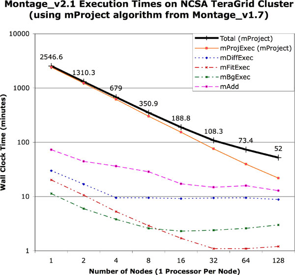
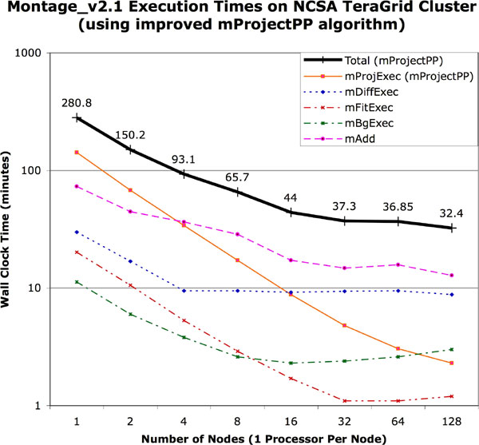
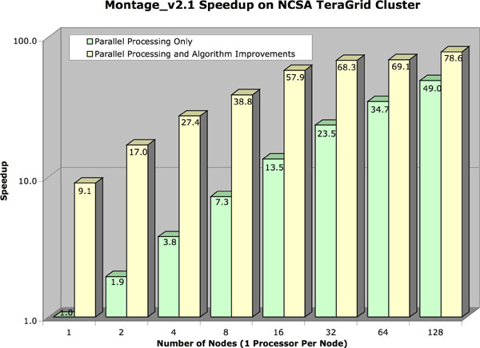

The following is a list of typical times required by various modules on a single processor:
System Information:
Dataset:
Timing:
| Module | Total Time |
| mImgtbl (54 input images) | 0.2 s |
| mProjExec (using mProject) (1 x 1 degree, 54 images) | 92 m, 35 s (103 s per image) |
| mProjExec (using mProjectPP) (1 x 1 degree, 54 images) | 4 m, 27 s (5 s per image) |
| mOverlaps (54 images) | 0.5 s |
| mDiffExec (124 difference images) | 37 s |
| mFitExec (124 images) | 32 s |
| mBgModel (124 difference images) | 1.2 s |
| mBgExec (54 images) | 41 s |
| mAdd (54 images; 1x1 degree area) | 35 s |
We have run the Pegasus-enabled Montage on a variety of resources: Condor pools, LSF- and PBS-managed clusters, and the TeraGrid (through PBS).
The following table summarizes the results of running a 2-degree M16 mosaic on the NCSA TeraGrid cluster. The total runtime of the workflow was 107 minutes. The workflow contained 1515 individual jobs. Below is a table that summarizes the runtimes of the individual workflow components.
| number of jobs | job name | average runtime |
| 1 | mAdd | 94.00 seconds |
| 180 | mBackground | 2.64 seconds |
| 1 | mBgModel | 11 seconds |
| 1 | mConcatFit | 9 seconds |
| 482 | mDiff | 2.89 seconds |
| 483 | mFitplane | 2.55 seconds |
| 180 | mProject | 130.52 seconds |
| 183 | transfer of data in | In the range of 5-30 seconds each |
| 1 | transfer of mosaic out | 18: 03 minutes |
To this point, our main goal was to demonstrate feasibility of running the Montage workflow in an automated fashion on the TeraGrid with some amount of performance improvement over the sequential version. Currently, Pegasus schedules the workflow as a set of small jobs (as seen in the table above, some of these jobs run only a few seconds.) Obviously scheduling too many little jobs suffers from large overheads. In fact, if this processing was run on a single TeraGrid processor, it would have taken 445 minutes, so we are not taking very much advantage of the TeraGrid’s parallelism. However, initially structuring the workflow that way allows us to expose the highest degree of parallelism.
For comparison, we previously (yourSky Baseline Performance document) reported mosiacking a 1-square degree region of 2MASS data with yourSky on 4 194 MHz MIPS R10000 processors of an SGI PowerOnyx in 428.4 seconds. As this machine has been retired, we can compare this to yourSky running on 4 600 MHz MIPS R14000 processors, where we have mosaicked a 4-square degree 2MASS image in 9 minutes. This is reasonable, since the work involved is 4 times more, and the processors are about 3 times faster. Computing the same 4-square degree mosaic using Montage 1.7 with handscripted parallelization takes 153 minutes, making this version of Montage roughly 17 times slower than yourSky.
There are two issues brought out in this performance discussion. First, the current version of Montage is slow when compared with yourSky. This is because we were more concerned with accuracy (preservation of calibration and astrometric fidelity) than performance in this version of Montage, and we will be optimizing future versions of Montage to increase the performance without reducing the accuracy. That is, the performance figures reflect a computational burden that must be borne in delivering science grade products. Second, the use of our current Grid software with our current DAG causes the parallel performance on the TeraGrid to be sub-optimal. We plan to address this in three ways: making Pegasus aggregate nodes in the workflow in a way that would reduce the overheads for given target systems; encouraging the Condor developers to reduce the per-job overhead; and examining alternate methods for distributing the work on the Grid, such as something similar to the handscripting on the MIPS machines. Each option has advantages and disadvantages that will be weighed as we go forward.
The purpose of this section is to demonstrate that the Montage team has fulfilled the Milestone G speedup metric, stated as follows:
The improved yourSky code per milestone I) will run on the Teragrid. The achievable computational speed-up will depend on the performance of the Teragrid as deployed. We propose two performance metrics: A target computation speedup that ignores I/O time and a target overall speedup that includes both computation and I/O times. We will achieve a target performance that is equivalent to a computation speedup of 64 and an overall speedup, including I/O, of 32, for a 5 degree x 5 degree 2MASS mosaic (which will be the most computation intensive dataset) on a 128x1GHz (128 GFlops) target machine with a sustained bandwidth to disk of 160 MB/sec.
To demonstrate fulfillment of this milestone, we chose to use the "Phase 2" TeraGrid cluster at the National Center for Supercomputing Applications (NCSA), University of Illinois at Urbana-Champaign. This cluster consists of 887 nodes, each with dual Itanium-2 processors and each having at least 4 GB of memory. 256 of the nodes have 1.3 GHz processors, and the other 631 nodes have 1.5 GHz processors. All of the timing tests reported in this document used the faster 1.5 Ghz processors. The network interconnect between nodes is Myricom’s Myrinet and SuSE Linux is the operating system. Disk I/O is to a 24 TB General Parallel File System (GPFS). In all cases, the job was scheduled on the system using Portable Batch System (PBS) and the queue wait time was not included in the execution times since that is heavily dependent on machine load from other users.
The dataset used for these performance tests is a 6 x 6 degree 2MASS J-band mosaic of M16. Construction of this mosaic requires 1,254 2MASS images as input, each having about 0.5 Megapixels, for a total of about 657 Megapixels input (or about 5 GB with 64 bits per pixel double precision floating point data). The output is a 3.7 GB FITS file with a 21,600 x 21,600 pixel data segment, and 64 bits per pixel double precision floating point data. Note that the output data size is a little smaller than the input data size because there is some overlap between neighboring input images. For the timings reported here, we assumed that the input data had been pre-staged to a local disk on the compute cluster.
The baseline for this speedup demonstration is the serial Montage_v1.7 software. We accomplished the speedup using a combination of algorithmic improvements and parallel processing. The primary algorithmic improvement was a fast plane-to-plane projection algorithm (mProjectPP), which replaces the old mProject algorithm that used a two-step approach of mapping input image coordinates to the sky, and then to the output image space. For more information about mProjectPP and the rest of the Montage modules, refer to the Montage Software Detail Design Specification. Parallel processing was implemented using Message Passing Interface (MPI) for the following 5 Montage modules: mProjExec, mDiffExec, mFitExec, mBgExec, and mAdd.
The timing results are compiled in Table 1, which shows wall clock times in minutes for each Montage module run on the specified number of nodes (with one processor per node) on the NCSA TeraGrid cluster. The end-to-end run of Montage_v2.1 required running the modules in the order shown in the table. The modules that have been parallelized are labeled as MPI; all other modules are serial implementations. Note that timings are shown for two versions of the mProjExec module, one that calls the slower mProject implementation and one that calls the improved mProjectPP implementation. Total times are shown for both implementations, with only the one specified implemention (mProject or mProjectPP) called in each run. For clarity, the execution times for the parallel modules on the different number of cluster nodes are plotted in Figure 1 for the mProject implementation and in Figure 2 for the mProjectPP implementation. Figure 3 shows a plot of the speedup we were able to achieve for each size of cluster partition.
Using just parallelization we were able to reduce the one processor time of 2546.6 minutes down to 52.0 minutes on 128 nodes, for a parallelization speedup of 49.0. Note that with the exception of some small initialization and finalization code, all of the parallel code is non-sequential. The main reason the parallel modules fail to scale linearly as the number of processors is increased is I/O. On a machine with better parallel I/O performance, we would expect to get better speedups; i.e., we have not reached a situation where the amount of work is too small for the number of processors, nor have we reached an Amdahl’s law limit where our speedup is limited by the serial fraction of the program.
With the algorithmic improvements of mProjectPP, we were able to reduce the 128-node time further down to 32.4 minutes, for an overall speedup (including parallelization and algorithmic improvements) of 78.6. Since by definition the "speedup not including I/O" will only increase our speedup of 78.6, we have met both of our metrics for milestone G, which specified a speedup of at least 64 for computation only and overall speedup of at least 32.
| Module | Number of Nodes (1 processor per node) | |||||||
| 1 | 2 | 4 | 8 | 16 | 32 | 64 | 128 | |
| mImgtbl | 0.7 | 1.05 | 1.05 | 1.2 | 1.4 | 1.3 | 1.2 | 0.7 |
| mProjExec(MPI, mProject) | 2408.1 | 1228.1 | 620.0 | 302.4 | 153.6 | 75.8 | 39.6 | 21.9 |
| mProjExec(MPI, mProjectPP) | 142.3 | 68.0 | 34.1 | 17.2 | 8.8 | 4.8 | 3.05 | 2.3 |
| mImgtbl | 1.1 | 1.0 | 0.9 | 1.3 | 1.1 | 1.2 | 1.1 | 1.1 |
| mOverlaps | 0.05 | 0.05 | 0.05 | 0.05 | 0.05 | 0.05 | 0.05 | 0.05 |
| mDiffExec(MPI) | 30.0 | 16.9 | 9.5 | 9.5 | 9.2 | 9.4 | 9.5 | 8.8 |
| mFitExec(MPI) | 20.2 | 10.6 | 5.3 | 2.9 | 1.7 | 1.1 | 1.1 | 1.2 |
| mBgModel | 1.1 | 1.1 | 1.1 | 1.1 | 1.1 | 1.1 | 1.1 | 1.1 |
| mBgExec(MPI) | 11.3 | 6.0 | 3.8 | 2.6 | 2.3 | 2.4 | 2.6 | 3.0 |
| mImgtbl | 1.05 | 0.9 | 0.9 | 1.1 | 1.1 | 1.2 | 1.1 | 1.4 |
| mAdd(MPI) | 73.0 | 44.6 | 36.4 | 28.7 | 17.2 | 14.8 | 15.8 | 12.8 |
| Total (with mProject) | 2546.6 | 1310.3 | 679.0 | 350.9 | 188.8 | 108.3 | 73.4 | 52.0 |
| Total (with mProjectPP) | 280.8 | 150.2 | 93.1 | 65.7 | 44.0 | 37.3 | 36.9 | 32.4 |


